Color Palette
Brand primaries from the AIRI identity, extended with a Set2-influenced qualitative palette for visual variety across images and data visualizations.
Extended (Set2-influenced)
Image Style
Visual Philosophy
Abstract geometric and mathematical art — tessellated patterns, network graphs, Voronoi diagrams, topological surfaces, lattice structures. Clean, precise, almost architectural. Like looking at the hidden mathematical structure beneath AI systems and their societal impacts.
- Mood: Serious but elegant. Academic gravitas with visual sophistication.
- Rules: No text in images. No photorealistic elements. No AI-generated faces.
- Backgrounds: Off-white (#FAFAFA) or deep charcoal (#1A1A1A).
Full style guide: IMAGE_STYLE.md
Generated Images
Each AIRI product maps to a distinct geometric pattern type that visually represents its function.
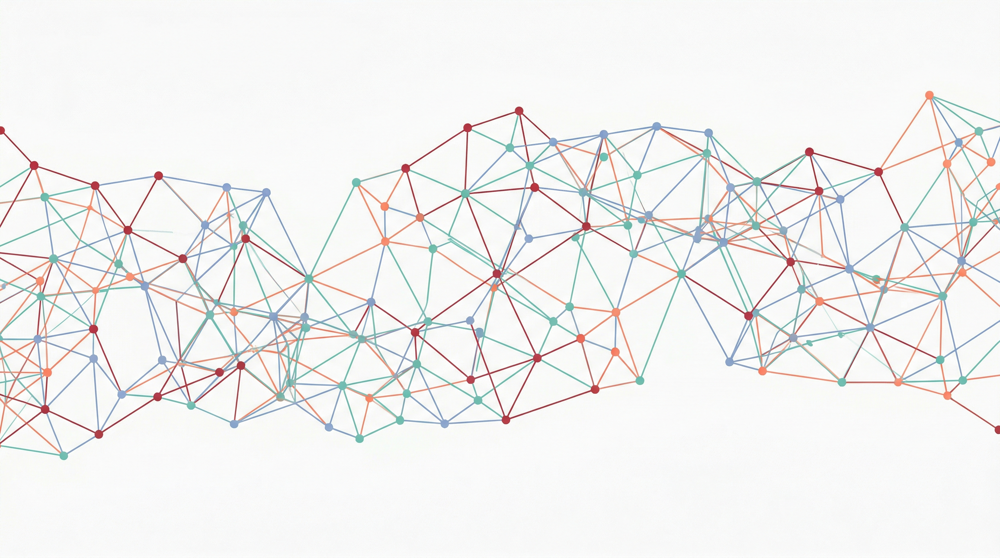
Hero
hero-pattern.jpg
Flowing tessellated network graph. Used at 12% opacity as hero section background. Suggests interconnection and breadth.
Prompt
Wide panoramic abstract tessellated network graph, interconnected nodes and edges forming a flowing lattice structure, using colors #A32035 red, #66C2A5 teal, #8DA0CB blue, #FC8D62 coral on white #FAFAFA background, clean geometric precision, generative art style, mathematical beauty, no text, minimal and elegant
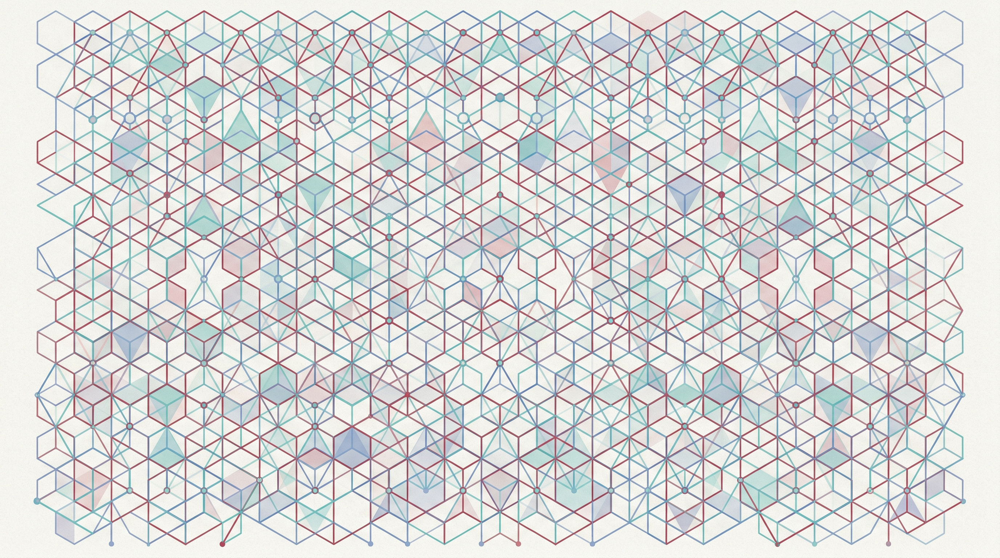
Repository
card-repository.jpg
Dense grid lattice. Structured knowledge taxonomy. Regular geometric tessellation with subtle color variation.
Prompt
Abstract dense grid lattice pattern representing structured knowledge taxonomy, regular geometric tessellation with subtle color variation, using #A32035 red, #66C2A5 teal, #8DA0CB blue on off-white background, clean mathematical precision, generative art style, no text
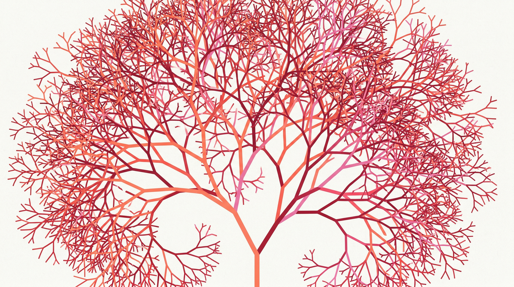
Incident Tracker
card-incidents.jpg
Branching fractal tree. Cascading events spreading outward in a dendritic network.
Prompt
Abstract branching fractal tree pattern representing cascading events, dendritic network spreading outward, using #FC8D62 coral, #A32035 red, #E78AC3 pink on off-white background, clean geometric precision, generative art style, no text
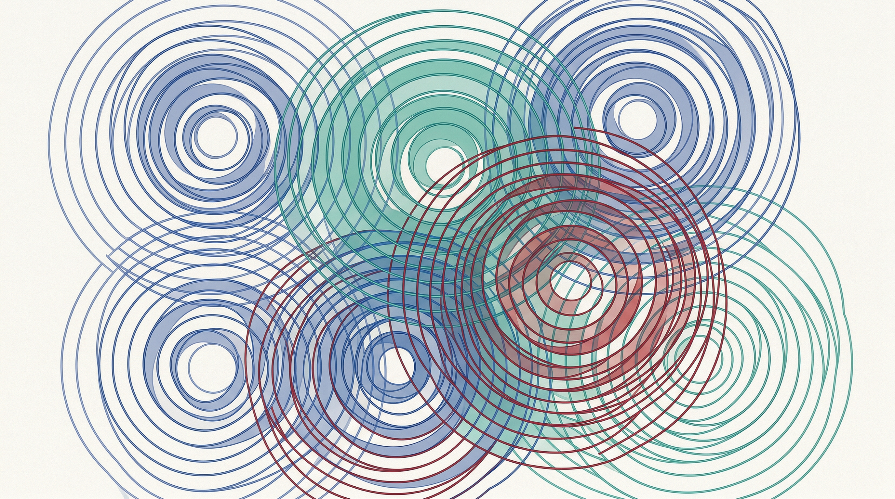
Governance Map
card-governance.jpg
Overlapping circles and Venn diagrams. Concentric rings intersecting — jurisdictional overlap.
Prompt
Abstract overlapping circles and Venn diagram pattern representing jurisdictional overlap, concentric rings intersecting, using #8DA0CB blue, #66C2A5 teal, #A32035 red on off-white background, clean mathematical precision, generative art, no text
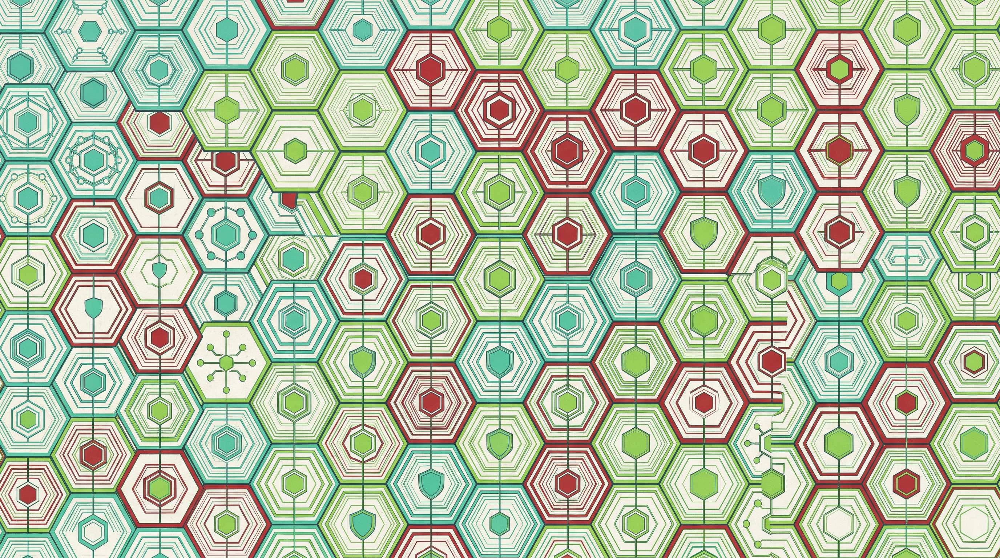
Mitigations
card-mitigations.jpg
Hexagonal tessellation honeycomb. Protective risk controls as a shield pattern.
Prompt
Abstract hexagonal tessellation honeycomb pattern representing protective risk controls, using #66C2A5 teal, #A32035 red, #A6D854 green on off-white background, clean geometric precision, generative art style, no text
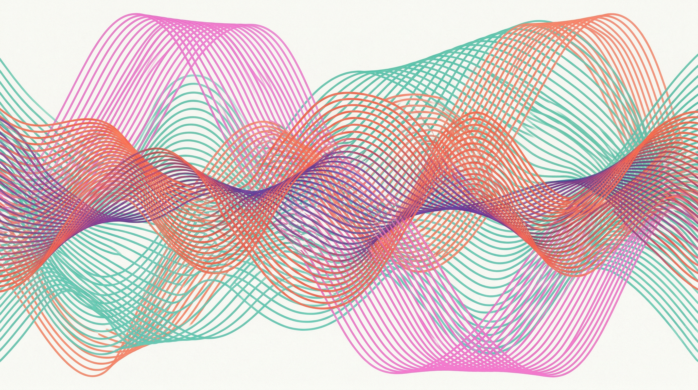
Blog / General
card-blog-1.jpg
Wave interference pattern. Sinusoidal curves overlapping — emerging knowledge.
Prompt
Abstract flowing wave interference pattern, sinusoidal curves overlapping creating moire-like effects, using #E78AC3 pink, #66C2A5 teal, #FC8D62 coral on off-white background, clean geometric precision, generative art, no text
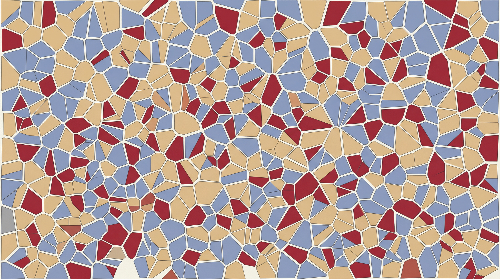
Blog / General
card-blog-2.jpg
Voronoi diagram. Irregular polygonal cells — natural partitioning and categorization.
Prompt
Abstract Voronoi diagram pattern, irregular polygonal cells with colored fills, organic tessellation suggesting natural partitioning, using #8DA0CB blue, #E5C494 sand, #A32035 red on off-white background, clean geometric precision, generative art, no text
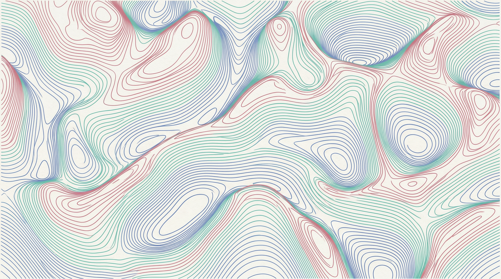
Blog / General
card-blog-3.jpg
Topological surface contour lines. Smooth elevation gradients — the risk landscape.
Prompt
Abstract topological surface contour lines and level sets, smooth curves with elevation gradients, mathematical landscape, using #D07886 rose, #66C2A5 teal, #8DA0CB blue on off-white background, clean geometric precision, generative art, no text
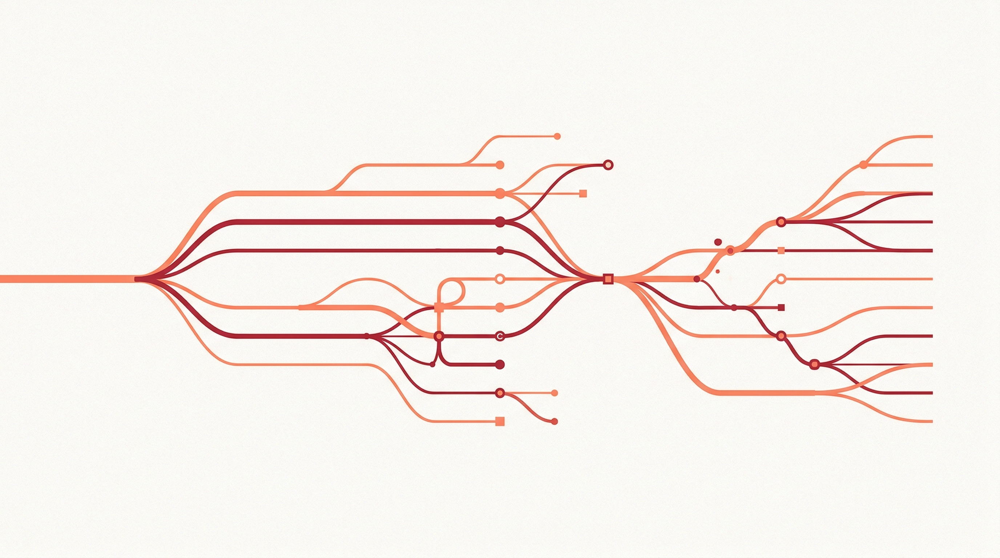
Snapshot
snapshot-incidents.jpg
Branching horizontal timelines diverging and converging — incidents over time.
Prompt
Abstract branching horizontal timeline lines diverging and converging, suggesting incident tracking over time, using warm coral #FC8D62 and #A32035 red on off-white background, clean geometric precision, generative art, no text
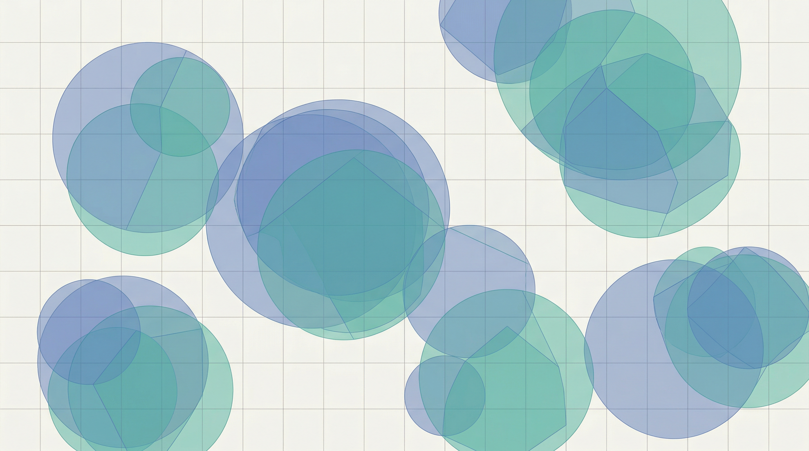
Snapshot
snapshot-governance.jpg
Overlapping translucent circular and polygonal regions on a grid — governance zones.
Prompt
Abstract overlapping translucent circular and polygonal regions on a grid, suggesting geographic governance zones, using muted blue #8DA0CB and teal #66C2A5 on off-white background, clean geometric precision, generative art, no text
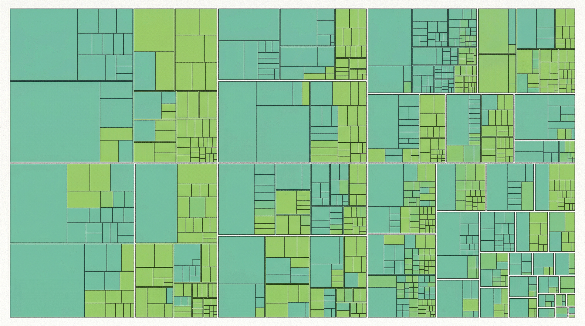
Snapshot
snapshot-mitigations.jpg
Treemap visualization with nested rectangles and hierarchical subdivisions — taxonomy.
Prompt
Abstract treemap visualization with nested rectangular regions and hierarchical subdivisions, suggesting taxonomy categorization, using soft teal #66C2A5 and green #A6D854 on off-white background, clean geometric precision, generative art, no text